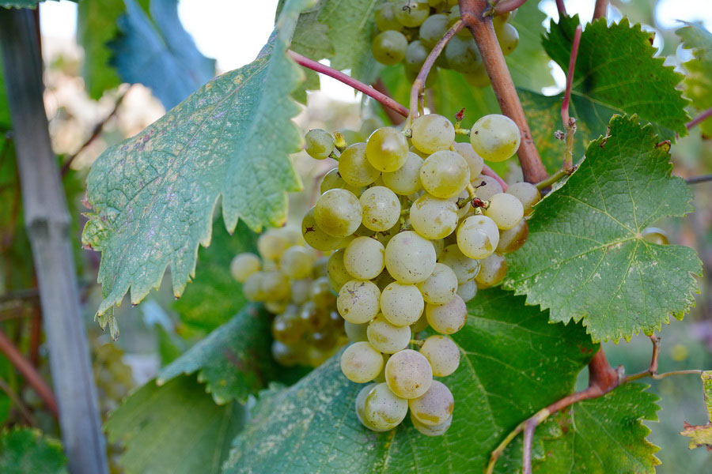
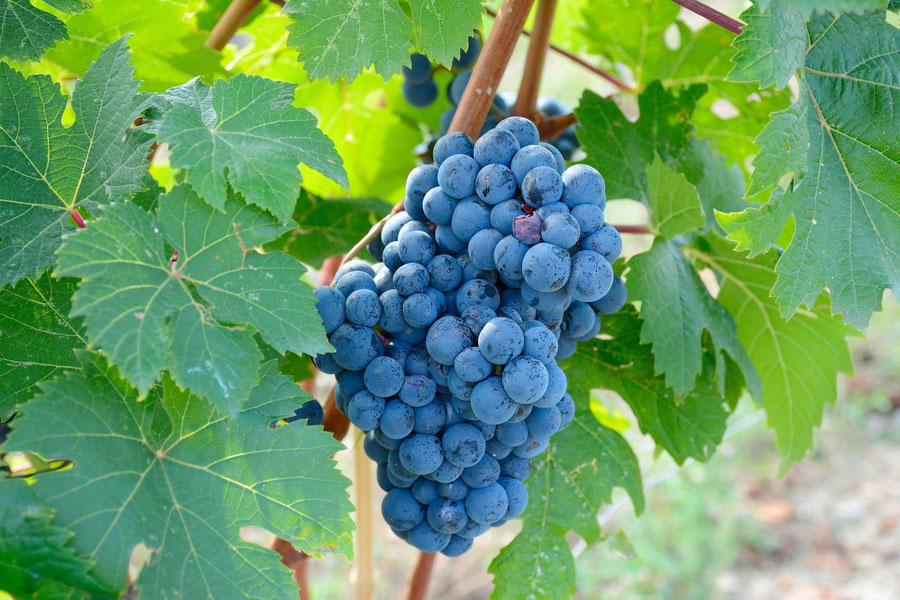

Imereti Wine Region
Fresh, citric white wines and aromatic reds make Imereti one of the most compatible wine regions not just in Georgia,but in Europe too.When we talk about Georgian wine, diversity is the word that immediately comes to mind. This small country has an incredible range of wine styles thanks to its diverse natural landscapes and climatic conditions. Here, there is a perfect balance of everything from sub-tropical to continental climates, seaside to semi-desert landscapes, and vineyards planted at the foothills of Caucasus Mountains or on the hills of the Racha region.Georgia has 10 wine regions: Kakheti, Kartli, Imereti, Racha-Lechkhumi, Meskheti, Guria, Kvemo Svaneti, Samegrelo, Adjara, and Abkhazia. Today, we will look at Georgia’s one of the leading wine region Imereti
As a wine region, Imereti is the most diverse of Georgia bordered by the Likha Ridge, the Meskheti Mountains, the Caucasus Ridge, and the Tskhenistskali River. The mountainous landscape provides a diverse range of mesoclimates for viticulture with altitudes ranging from 50 to 500 meters (164 to 1640 feet) above sea level.The inland location of Imereti creates a humid subtropical climate, with minimal influence from the Black Sea. Cold, wet winters and hot, dry summers allow for grapevines to store adequate water and nutrients as well as ripen to full maturity prior to harvest. Soil types are various throughout, with vineyards found planted on stony loams with high contents of calcium carbonate and limestone.Imeretian white wines are characterized by the medium body, pleasant acidity, citric notes, and medium tannins,similar to Sauvignon Blanc.Parts of Imereti region are very similar to the famous appellation close to the Dordogne River, which has rich clay and chalky soils ideal for the Merlot grape. Saint Emilion also has legendary red wines that, like Imeretian reds, are softer in texture. And Otskhanuri Sapere could be a second Merlot for Georgia.
White Wines
Tsolikouri
Tsolikouri grapes are highly prized for their use in the production of quality white dry and naturally semisweet dessert wines, and as such they are by far the most popular grape variety in western Georgia.Tsolikouri typically gives the first signs of fruit in the second year after planting. It is known for an early full harvest which appears by the fourth year or even the third year with good care and early planting.The vintage of the Tsolokauri grape either begins around October 10th and lasts until the end of the month or begins at the end of October. The late vintage has a sugar content ranging from 21- 25% and is used in Georgian winemaking to produce semisweet wines.
Tsitska
Grown throughout upper and central Imereti, Tsitska means “variety with small grapes from the village of Tsitske or Tstiskiuri”.By current standards, however, the grape is of medium size, with thick skins. The medium-sized, generally conical bunches tend to be compact and dense. Budburst is generally mid-April, with ripening at the beginning of October. The vine has moderate vigour but with good yields.When vinified to dryness, Tsitska wines have yellow fruits such as quince, melon, and pear, sometimes with a honeyed note. Tsitska may be blended with Tsolikouri, and sometimes Krakhuna
Krakhuna
In a country overflowing with ancient grape varieties, Krakhuna is one of the oldest. And is happily easier to pronounce than many other Georgian grapes! Indigenous to Imereti in the west, ‘Krakhuna’ means ‘crisp’ in the local Imeretian dialect. It’s an appropriate nickname for this high-acid grape, which winemakers often describe as ‘crunchy’ in texture.Whether Krakhuna is fermented either in the European and traditional Georgian manner, it offers notes of intensely ripe banana and apricots, with honeyed tones. Produced in Churi, Krakhuna wines are deep amber, with chalky tannins, stone fruit flavours with tropical notes and a slight herbal tinge. With its considerable flavour profile and broad structure, Krakhuna wines have the potential to develop in bottle.
Sviri
Sviri is the only Georgian appellation located in Imereti. This small wine region is nestled on the left bank of the Kvirila river, and it produces aromatic and crisp white wines with three local grapes—Tsolikouri, Tsitska, and Krakhuna.Sviri was officially recognized in 1962, and the grapes are mainly used to produce classic dry wines. The blends result in pleasant and lively straw-colored wines. They tend to have bright acidity and light to medium body. The aromas are dominated by citrus and yellow fruit, such as pear and quince.These wines make an excellent aperitif, but they can also pair with appetizers and light, fish-based main courses.
Red Wines
Dzelshavi
Dzelshavi is fondly referred to by many Georgian Wine aficionados as a ‘summer wine’. That’s because the wines produced by this thin-skinned grape are light, fresh and lively. They’re similar in style to lighter Beaujolais, Pinot Noirs or Cabernet Francs – all fantastic options for warm weather. You can even try this style of wine lightly chilled, making them the perfect weekend accompaniment to summery salads.Though its fresh, light style makes Dzelshavi feel thoroughly modern in style, it’s actually ancient even by Georgian standards.It is believed to be one of Georgia’s very oldest grape varieties, dated to have emerged in roughly the fifth century AD.
Otskhanuri Sapere
One of the oldest Georgian varieties, Otskhanuri Sapere grows only in the western part of the country, mostly in Racha-Lechkhumi and Imereti.Otskhanuri Sapere wines are of an intense ruby colour, and a distinctive flavour profile. Firmly structured and tannic, with high acidity, when young it exhibits bright flavours of cherries, forest fruits, plums and herbs. Grippy and toothsome when young, the wines peak after 10-15 years of aging, but can age for an additional 20-30 years.
Aladasturi
Aladasturi vines were widespread throughout central Georgia but were largely wiped out by phylloxera.Originally trained to grow up trees, now it is mostly trained in a free-standing double-caned system developed in Georgia.Despite the thick skins, the wine is not deeply pigmented. In Churi, it tends to be relatively pale ruby in colour, light-bodied, with delicate tannins, and alcohol levels on the shy side of medium (10-11.5%). It has black cherry and pepper aromas, with hints of smoke and tobacco. While Aladesturi wines can be enjoyed when they are young and fresh, good examples also have the potential for improvement in bottle.
Chkhaveri
Chkhaveri originally was a “maghlari” wine, a vine trained to grow up trees. This pinkish-violet variety is sensitive to site and needs careful attention to give quality fruit. It grows particularly well on cooler, south-facing hillsides with limestone soils.Chkhaveri can reach very high sugar levels while retaining fresh, brisk acidity, allowing for remarkable versatility. Alcohol levels are always moderate. Regardless of whether the wine is still or sparkling, dry or semi-sweet, Chkhaveri wines are vibrant pink, fresh flavours of red berries, cherries, forest fruits and baking spices. The naturally semi-sweet rosés, produced classically in tank and intended for early consumption are delightful and refreshing. Produced as a light red in Churi, the fruits are more subdued but the spiciness offers lift and complexity